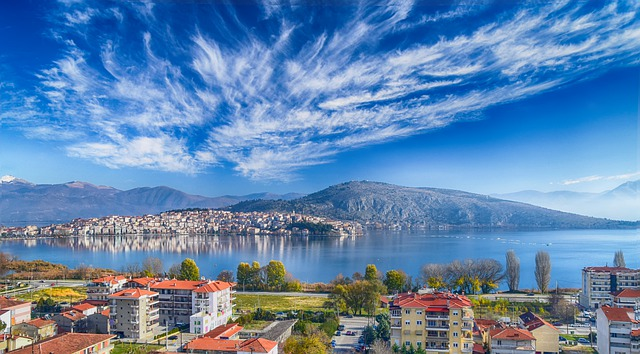

Η Καστοριά είναι πόλη της Μακεδονίας, έδρα του δήμου Καστοριάς και πρωτεύουσα της Περιφερειακής Ενότητας Καστοριάς στην δυτική Μακεδονία. Ο πραγματικός πληθυσμός της πόλης ανέρχεται στους 20.000 κατοίκους, σύμφωνα με την απογραφή του 2011.[2] Είναι χτισμένη πάνω σε χερσόνησο της λίμνης Ορεστιάδας, σε υψόμετρο 703 μ.[1] από την επιφάνεια της θάλασσας, ανάμεσα στα βουνά Βίτσι και Γράμμο. Περιβάλλεται από τη λίμνη της και συνδέεται με την ξηρά μέσω μιας ευρύτερης λωρίδας γης από επιχωματώσεις, δίνοντας την εντύπωση νησιού.
Στην μακραίωνη ιστορία της, μιάμιση χιλιετία από κτίσεως, γνώρισε πολιορκίες και κατακτήσεις από Βουλγάρους, Νορμανδούς και Τούρκους, διατηρώντας όμως μέχρι σήμερα σημαντικό αριθμό βυζαντινών εκκλησιών, κειμηλίων και αρχοντικών ως τεκμήρια της κατά καιρούς ακμής της, λόγω της επιτυχημένης εμπορίας και διακίνησης των γουναρικών σε σημαντικά κέντρα της Ευρώπης.
| First Name | Last Name | Points | Points | Points | Points | Points | Points | Points | Points | Points | Points |
|---|---|---|---|---|---|---|---|---|---|---|---|
| Jill | Smith | 50 | 50 | 50 | 50 | 50 | 50 | 50 | 50 | 50 | 50 |
| Eve | Jackson | 94 | 94 | 94 | 94 | 94 | 94 | 94 | 94 | 94 | 94 |
| Adam | Johnson | 67 | 67 | 67 | 67 | 67 | 67 | 67 | 67 | 67 | 67 |
|  |